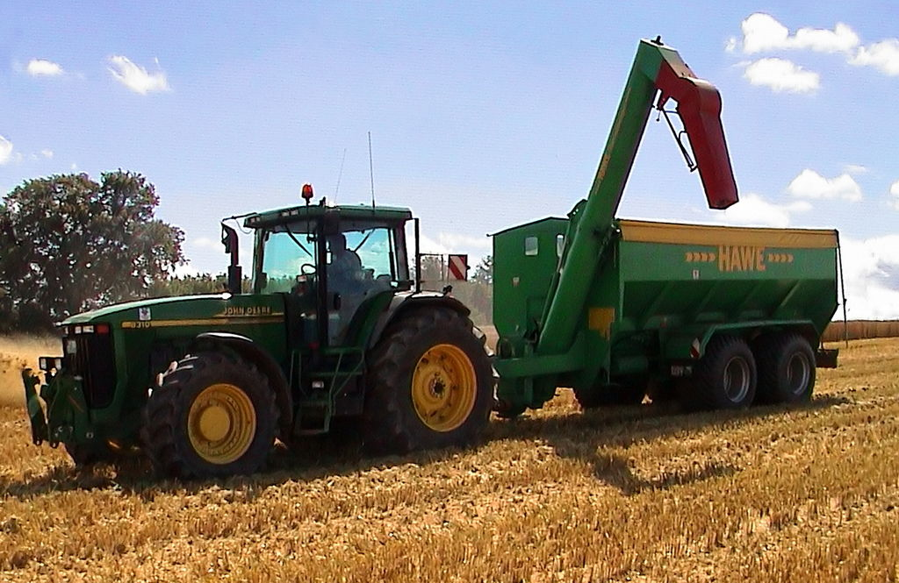

Most food has always been obtained through agriculture. With increasing concern over both the methods and products of
modern industrial agriculture, there has been a growing trend toward sustainable agricultural practices. This approach,
partly fueled by consumer demand, encourages biodiversity, local self-reliance and organic farming methods.Major influences on food production include international organizations
,national government policy and war.
In popular culture, the mass production of food, specifically meats such as chicken and beef, has come under fire from
various documentaries, most recently Food, Inc, documenting the mass slaughter and poor treatment of animals, often for
easier revenues from large corporations. Along with a current trend towards environmentalism, people in Western culture
have had an increasing trend towards the use of herbal supplements, foods for a specific group of people
, functional foods, and a more ethnically diverse diet.
Several organisations have begun calling for a new kind of agriculture in which agroecosystems provide food but also
support vital ecosystem services so that soil fertility and biodiversity are maintained rather than compromised.
According to the International Water Management Institute and UNEP, well-managed agroecosystems not only provide food,
fiber and animal products, they also provide services such as flood mitigation, groundwater recharge, erosion control
and habitats for plants, birds, fish and other animals.